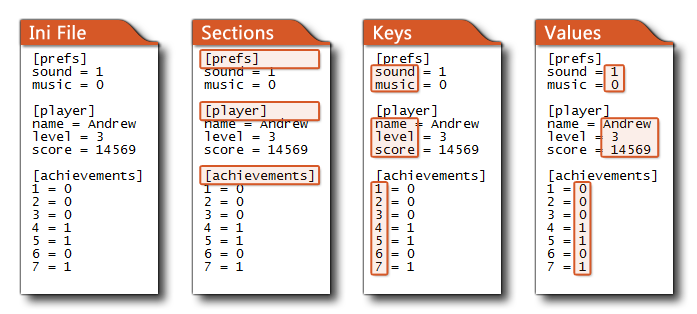

Escribir en archivo Ini Escribir en archivo Ini
Escribir en archivo Ini Escribir en archivo Ini Con esta acción, puede escribir un valor numérico o una cadena en un archivo Ini. Antes debe haber abierto el archivo Ini para lectura / escritura con la acción Abrir archivo Ini, y luego con esta acción debe indicar el tipo de datos a escribir (ya sea un número real o una cadena encerrada en ""), así como encabezado de sección, la clave dentro de esa sección y el valor de la clave. Para ayudar a visualizar la estructura de un archivo Ini, vea esta imagen: 
Como puede ver, los archivos Ini se dividen en secciones, donde cada sección tiene su propio nombre de encabezado, y luego cada sección se divide posteriormente en varios pares clave / valor (muy similar a una Estructura de datos de mapa ). Tenga en cuenta que puede crear archivos Ini usted mismo utilizando cualquier software de procesamiento de texto (como el Bloc de notas en Windows) y luego incluirlos como un Archivo incluido para leer y escribir en su juego.
¡IMPORTANTE! Intentar leer datos de un archivo Ini que no se haya abierto previamente con la acción Abrir Archivo Ini provocará un error grave y bloqueará su juego.
¡IMPORTANTE! Esto solo escribe los datos en la memoria y para finalmente escribir los datos en el archivo en el disco, debe llamar a Close Ini File, de lo contrario, los datos no se guardarán.

Argumento Descripción Type El tipo de datos para escribir, ya sea string (entre comillas ""), o real number Section La sección del archivo Ini para escribir (como una cadena) Key La clave dentro de la sección para escribir (como una cadena) Value El valor para escribir, ya sea una cadena o un número real basado en el argumento "tipo" (arriba)
El código de bloque de acción anterior abrirá un ini y luego escribirá datos en tres claves diferentes bajo el mismo encabezado de sección (una cadena y dos números reales) antes de volver a cerrar el archivo ini (escribiendo así los datos en el disco).